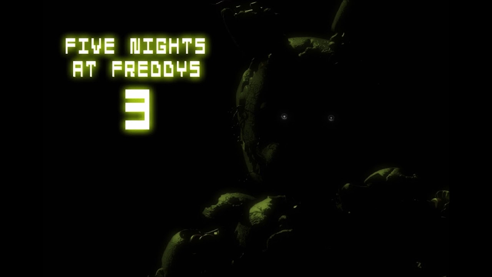

FNAF 3


He will come back. He always does. And we have a place for him.
- Thirty years after Freddy Fazbear's Pizza closed its doors, the events that took place
there have become nothing more than a rumor and a childhood memory, but the owners of
"Fazbear's Fright: The Horror Attraction" are determined to revive the legend and make the
experience as authentic as possible for patrons, going to great lengths to find anything
that might have survived decades of neglect and ruin.
- At first, there were only empty shells, a hand, a hook, and an old paper-plate doll, but then a remarkable discovery was made...
- The attraction now has one animatronic.
- At first, there were only empty shells, a hand, a hook, and an old paper-plate doll, but then a remarkable discovery was made...
- The attraction now has one animatronic.
Characters
Stars

There are 4 stars to unlock in the third game:
1. Beat Night 5.
2. Beat Night 6.
3. Beat Night 5 with the “Good” ending unlocked.
4. Beat Night 6 with “Aggressive” mode activated.
1. Beat Night 5.
2. Beat Night 6.
3. Beat Night 5 with the “Good” ending unlocked.
4. Beat Night 6 with “Aggressive” mode activated.
Gameplay
- Like the first game, it is an indie point-and-click survival horror video game in
which the player must again survive the night in the "new and improved" Freddy
Fazbear's Pizza while avoiding the animatronics.
Audio
The main menu music (PC version).
The main menu music (Mobile and Console versions).
Development
- On November 16, 2014, before the game's official reveal, Scott's website only displayed the
site header and the word "'offline." Brightening the picture shows small text in the bottom left
corner of the image saying "until next time." When viewing the image's code, one could find that
the alt-text read "soon." This "soon" was removed on December 8, 2014, but was re-added the same
day - likely a mistake.
- On December 6, 2014, when brightened, Scott's website had a very large number three on the bottom right, hinting at a third installment to the Five Nights at Freddy's series. The same day, however, the large three was removed from the bottom right, leaving only the word "offline." This third image did not include the words "until next time," either.
- On December 7, 2014, the 3 was re-added. Furthermore, when viewing the page's source, it displays the keywords of the page as: "five, nights, at, freddys, 30 years later, only one." Earlier versions read "20 years later," and "only one left."
- As of December 9th, 2014, the 3 was removed and replaced by a "Merry Christmas!" message below the "offline" text. The page's source has also changed to say "five nights at freddys, taking a break, Merry Christmas everyone! :)". The "soon" alt-text has also been removed again.
- On January 3rd, the "offline" image was replaced with a picture of Springtrap's face looking out from the darkness with the accompanying text, "I am still here." When brightened, a tiny gray 3 can be seen in the bottom-right corner. In the source code, there is text that says "I remain" - replacing the previous Christmas message. The source code also reveals that this new image is named "fnaf3.jpg".
- On January 14th, the website is updated, revealing a teaser of the animatronics' empty heads, including the paperpal, inside a box. A big, red "3" is seen above them. When the image is brightened, Springtrap is seen standing to the right of the box. The source code still has the "I remain" text, but the image is named "whatcanweuse.jpg".
- On January 26, 2015, Scott released the teaser trailer for Five Nights at Freddy's 3 on its Steam Greenlight page, the page also containing various in-game screenshots.
- The game was officially released on March 2, 2015 - first, as a demo given out to Let's Players on Twitch.tv and YouTube, then hours later as a full game available to the public on Steam. An Android version was released on March 7, 2015, followed by an iOS release on March 12, 2015.
- On December 6, 2014, when brightened, Scott's website had a very large number three on the bottom right, hinting at a third installment to the Five Nights at Freddy's series. The same day, however, the large three was removed from the bottom right, leaving only the word "offline." This third image did not include the words "until next time," either.
- On December 7, 2014, the 3 was re-added. Furthermore, when viewing the page's source, it displays the keywords of the page as: "five, nights, at, freddys, 30 years later, only one." Earlier versions read "20 years later," and "only one left."
- As of December 9th, 2014, the 3 was removed and replaced by a "Merry Christmas!" message below the "offline" text. The page's source has also changed to say "five nights at freddys, taking a break, Merry Christmas everyone! :)". The "soon" alt-text has also been removed again.
- On January 3rd, the "offline" image was replaced with a picture of Springtrap's face looking out from the darkness with the accompanying text, "I am still here." When brightened, a tiny gray 3 can be seen in the bottom-right corner. In the source code, there is text that says "I remain" - replacing the previous Christmas message. The source code also reveals that this new image is named "fnaf3.jpg".
- On January 14th, the website is updated, revealing a teaser of the animatronics' empty heads, including the paperpal, inside a box. A big, red "3" is seen above them. When the image is brightened, Springtrap is seen standing to the right of the box. The source code still has the "I remain" text, but the image is named "whatcanweuse.jpg".
- On January 26, 2015, Scott released the teaser trailer for Five Nights at Freddy's 3 on its Steam Greenlight page, the page also containing various in-game screenshots.
- The game was officially released on March 2, 2015 - first, as a demo given out to Let's Players on Twitch.tv and YouTube, then hours later as a full game available to the public on Steam. An Android version was released on March 7, 2015, followed by an iOS release on March 12, 2015.
Reception
- Five Nights at Freddy's 3 received mixed to positive reviews from professional critics,
specifically garnering praise for its darker and grittier tone. At Metacritic, which assigns a
rating out of 100 to reviews from mainstream critics, Five Nights at Freddy's 3 has received an
average score of 71 out of 100, whereas GameRankings gave the game's PC version a 72.00% based
on 4 reviews, and the iOS version an 80%.
- Omri Petitte from PC Gamer gave Five Nights at Freddy's 3 a score of 77 out of 100, praising the reworked camera system, but commented on how the jumpscares from the other animatronics "felt a little stale by the third night." In a more critical review, Nic Rowen from Destructoid gave the game a 6.5 out of 10, saying that, even though the game is "by far the most technically proficient and mechanically satisfying installment yet," he criticized Springtrap and Fazbear's Fright for lacking the "charm of the original cast and locations."
- Omri Petitte from PC Gamer gave Five Nights at Freddy's 3 a score of 77 out of 100, praising the reworked camera system, but commented on how the jumpscares from the other animatronics "felt a little stale by the third night." In a more critical review, Nic Rowen from Destructoid gave the game a 6.5 out of 10, saying that, even though the game is "by far the most technically proficient and mechanically satisfying installment yet," he criticized Springtrap and Fazbear's Fright for lacking the "charm of the original cast and locations."